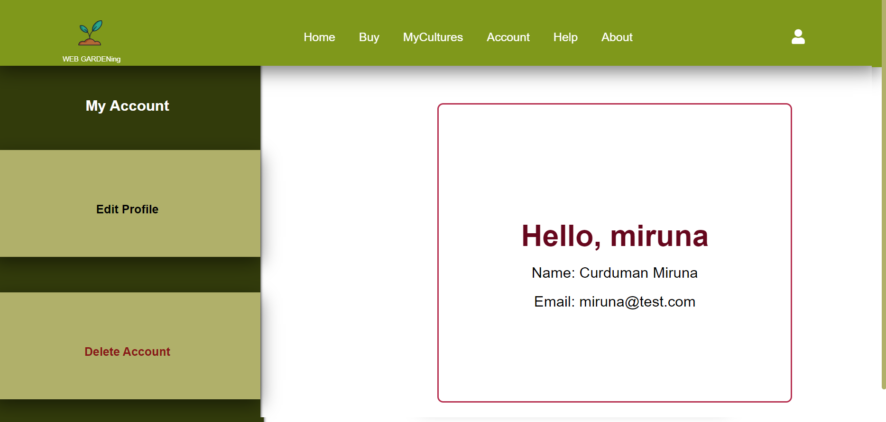
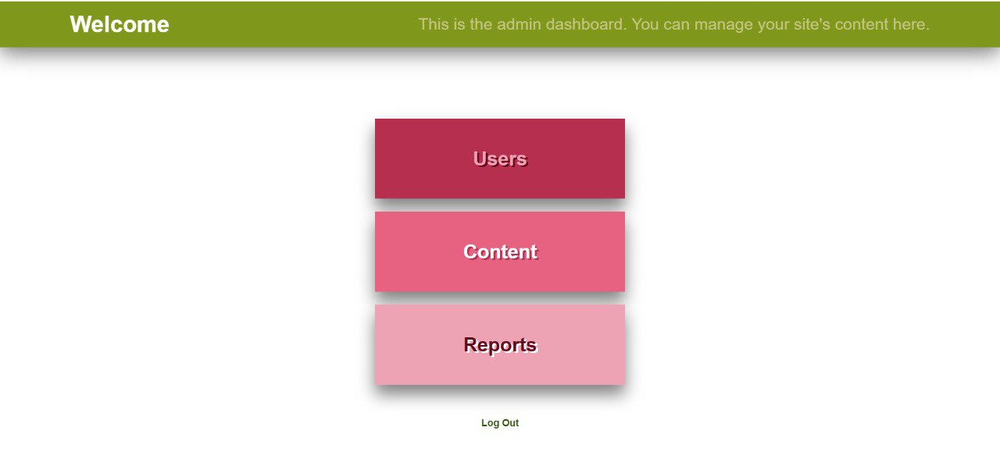
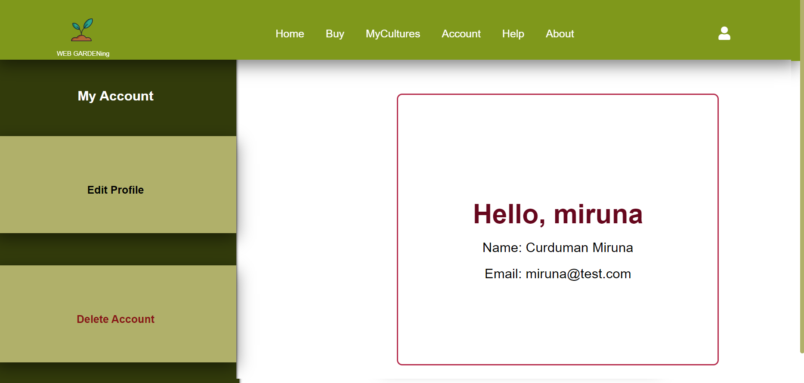
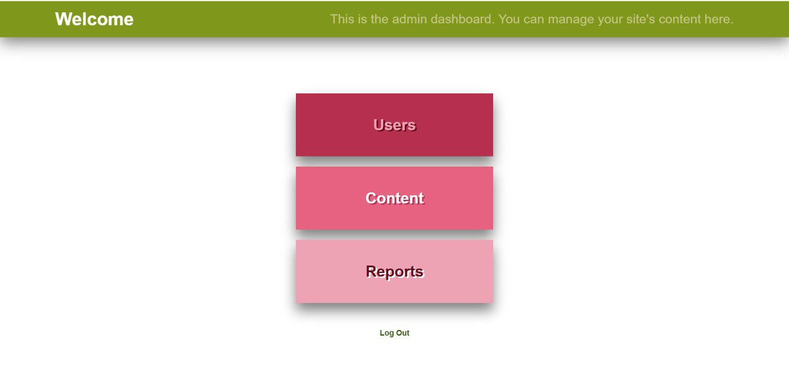

Structură
Documentul nostru este momentan compus din următoarele:
- Home (index.html) = pagina principala a aplicatiei.
- Buy (buy.html) = pagina unde utilizatori pot achizitiona culturi.
- My Cultures (mycultures.html) = pagina unde utilizatori își pot monitoriza culturile.
- Culture Template (oneculture.html) = template cum pagina culturilor va arata.
- Empty Culture Template (new.html) = template cum pagina culturilor goale va arata.
- Account (account.html) = pagina de unde utilizatorul se poate conecta, creea cont.
- About (about.html) = pagina care conține câteva detalii despre proiect și fondatori.
- Help (help.html) = pagina unde utilizatori pot găsii tutoriale despre caracteristicile aplicatiei.
I. General elements
I.1. Root
Selectorul CSS :root a fost folosit pentru a crea variabile culorilor în fișierul CSS care pot fi utilizate în întregul document.
I.2. Head
Fiecare pagina și subpagină conține o secțiune de head, similară cu următoare (index.html).
I.3. Header
De asemenea, in cadrul <header> contine bara de navigare. Aceasta contine linkuri catre
fiecare pagina a aplicatiei și câteva iconițe cu coșul de cumpărături (momentan încărcat cu produse de
noi) și pagina utilizatorului. Când pagina are o anumită lățime în locul titlurilor paginilor va apărea
un alt icon care va deschide un drop-down meniu.
I.4. Footer
La finalul fiecărei paginii avem si un <footer> cu denumirea aplicatiei. Urmand ca pe
viitor sa fie introduse mai multe informatii si detalii.

II. Home Page
Pagina de acasa este compusă din trei secțiuni principale:
1. Descrierea = o scurta descrierea a aplicatiei si functionalitatilor ei;
2. Users cultures = o sectiune cu imaginile culturile utilizatorilor;
3. Features = o sectiune dedicata principalelor functionalităti.


 


